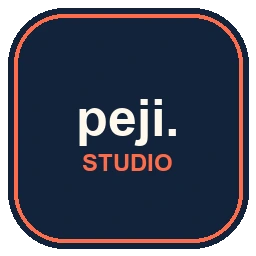
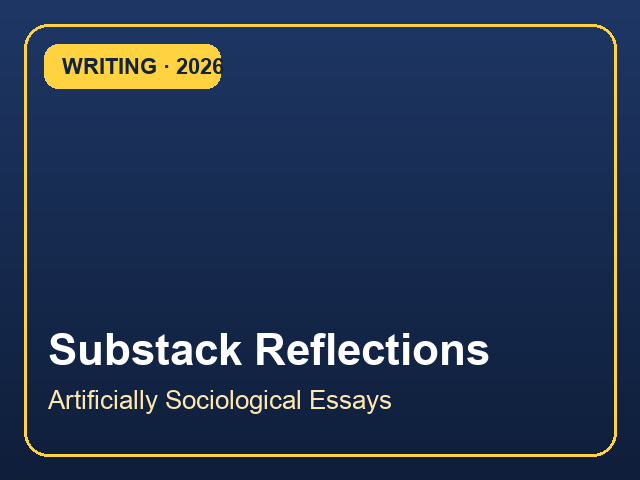
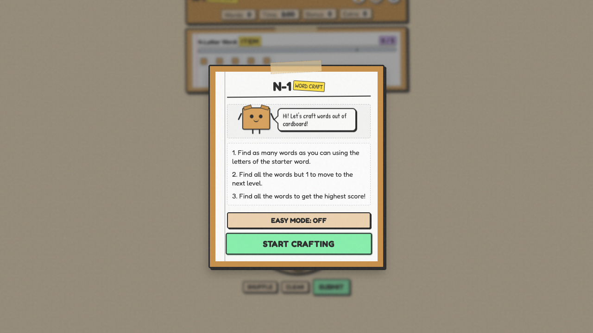
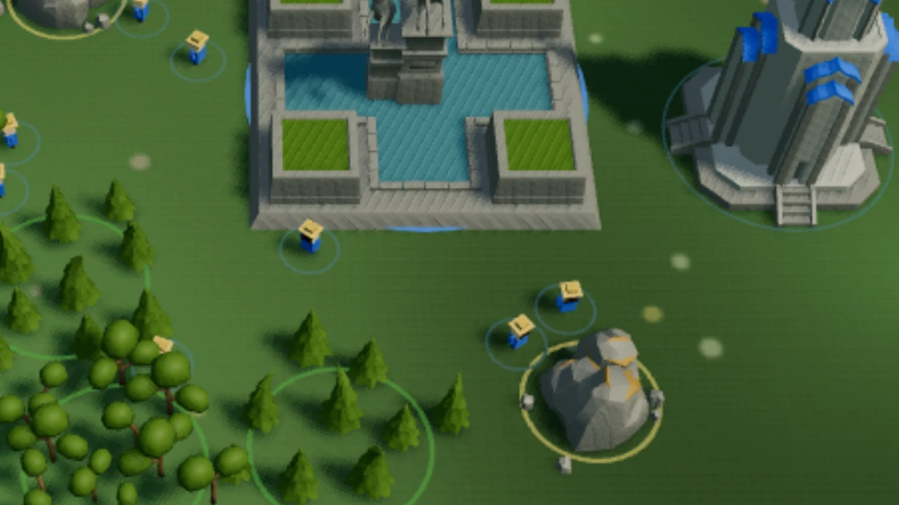
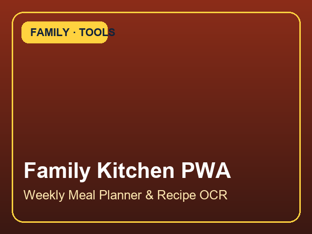
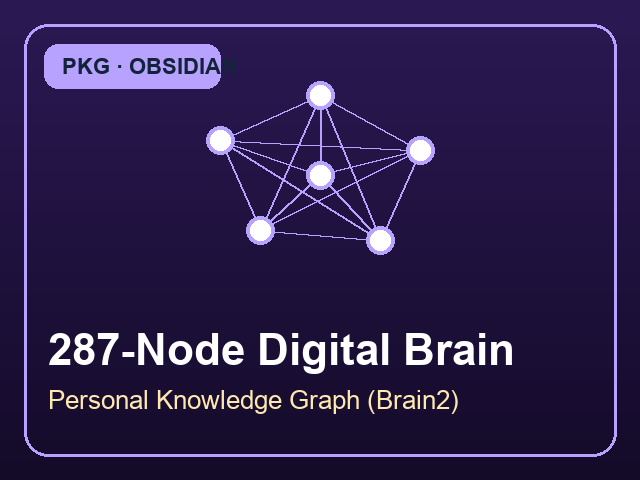

hi, I'm Peter
Sociologist, economist & manager (on leave). 15+ years at Statistics Canada · Building agentic AI & Peji Systems.
How I got here
For 15 years at Statistics Canada, I studied how technology shapes our society and economy, and grew the programs that continue this work. Then I took a One-Year AI Journey to build with it directly — shipping 40+ functional prototypes and founding Peji Systems to help organizations work smarter.
these notes move ;)
The journey
Nine stops from Toronto to Ottawa (2009 to 2026). Scroll to walk the path.
Selected work & case studies
From a $25M federal AI measurement business case to air-gapped local LLMs and DDI 3.3 survey suites. Pick a card from the box.
pick a card →
Featured client engagements across Peji Systems' three service tiers, published peer-reviewed research on Canada's digital economy, and sovereign AI systems.
Peji Systems · peji.ca
Small teams and nonprofits shouldn’t be overwhelmed by pej.ca — I deliver focused digital builds in 1–7 days, automated daily pipelines, and sovereign local AI on air-gapped 256GB Apple Silicon.
How we can work together · 3 Engagement Tiers & Architecture
My stack
Seventeen tools across frontier AI harnesses, sovereign local LLMs, reproducible statistics, and full-stack deployment.
My toolkit. Hover a tool to see how I use it.
How I work
From daily Obsidian PKG review agents and deterministic air-gap hooks to shipped applications and public reflection.
Off the clock





original design by James Chugh
Field notes & reflections
Takeaways from 'Artificially Sociological', architecture reflections, and visitor notes.
Pin a note
Your note is up on the wall. Explore more projects and reflections on GitHub and Peji.ca.
Open to manager AI & data leadership conversations, public-sector modernization, and nonprofit / small-business projects through Peji.ca.
quick connect: G GitHub · L LinkedIn · P Peji.ca · M Email
40+ open-source AIrepos · @p3ji
Connect & networkon LinkedIn.
Independent digital practice& sovereign AI.
Roles, advisory,or direct inquiry.
contact@peji.ca